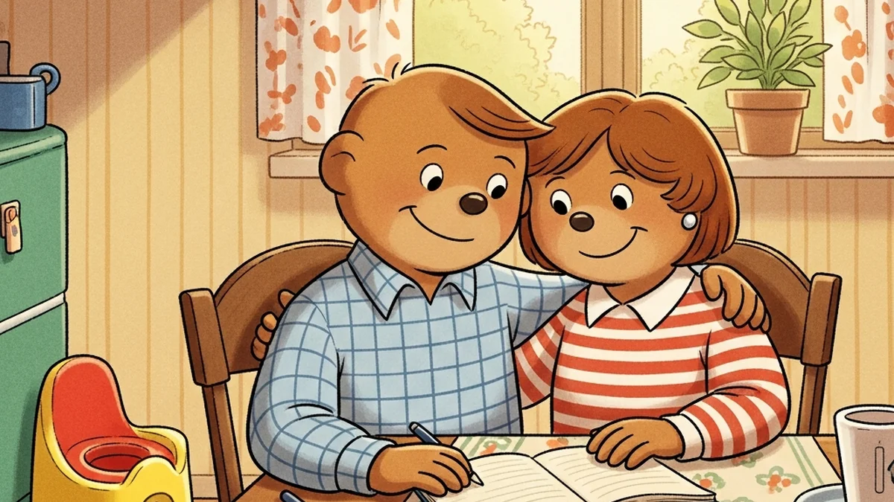
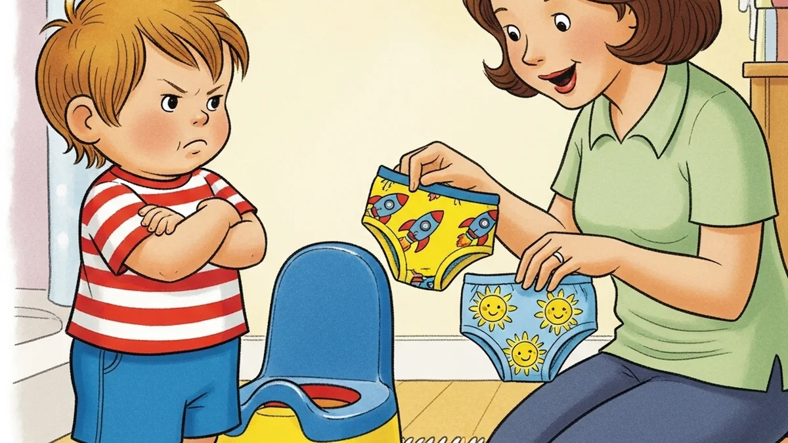

Common Problems
Solutions to common potty training challenges. Learn how to handle resistance, accidents, and other difficulties during your potty training journey.

Public Restroom Fears: Helping Your Toddler Use Toilets Away From Home
Your toddler freezes at the bathroom door every time you're out. Here's why public restrooms scare kids and what actually helps them feel safe.

Potty Training When Parents Disagree on the Approach
You want the 3-day method but your partner thinks it's too soon. Here's how to stop fighting and start working together.

Potty Training a Strong-Willed Child: What Actually Works
Your strong-willed toddler won't use the potty no matter what you try. Here's why pushing harder backfires and 6 strategies that actually work.

Potty Training Power Struggles: How to Stop Fighting and Start Winning
Stuck in a potty training standoff? Here's why power struggles happen with toddlers and 5 proven ways to end the battle without giving up.

When Your Toddler Will Pee But Won't Poop on the Potty
Your toddler pees on the potty just fine but refuses to poop? Here's why it happens and exactly how to fix it, step by step.

Potty Training and Constipation: Breaking the Cycle
Your toddler won't poop on the potty and now they're backed up. Here's how constipation and potty training feed each other, and how to fix it.

Poop Withholding: Why It Happens and How to Break the Cycle
Toddler refusing to poop on the potty? Learn why poop withholding happens, how it creates a painful cycle, and proven strategies to help your child.